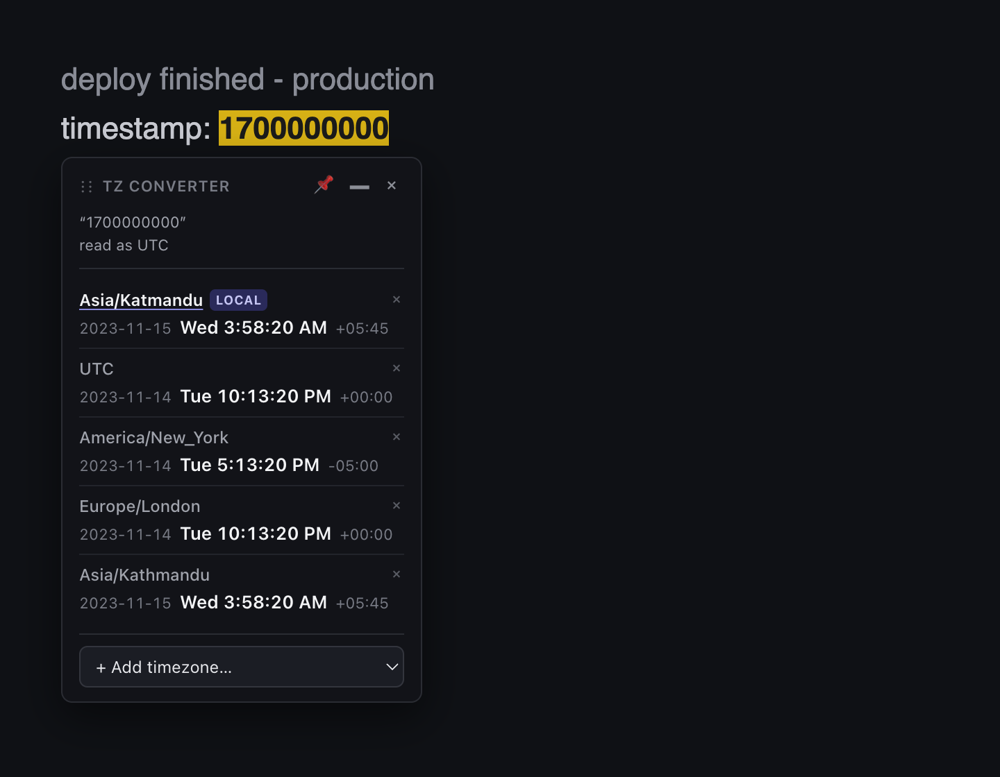
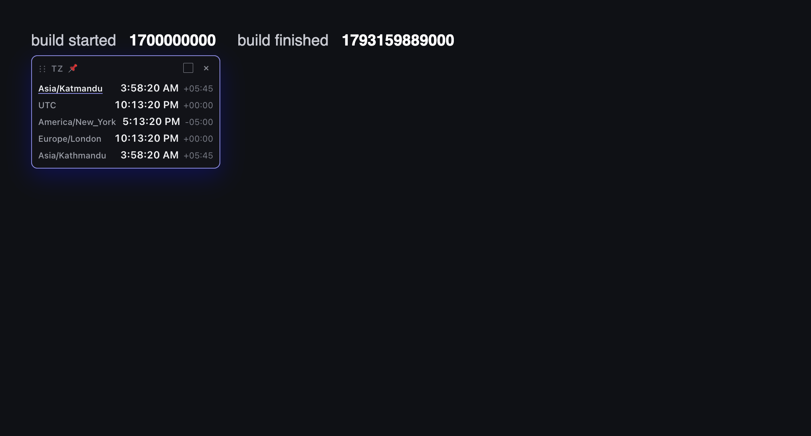
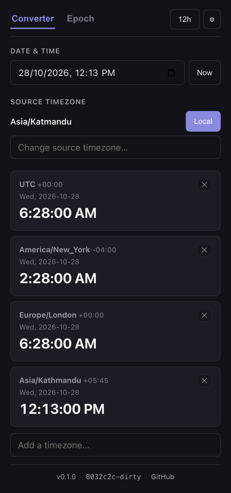
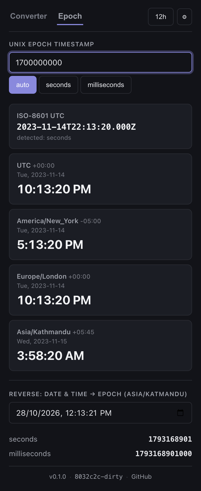

Convert any time — right on the page.
No tab-switching. No mental math.

Pin times. Compare on one screen.

A full converter in one click.
Pick a time, hit Local, read every zone.

Epoch, ISO, or plain English.
TZ
Converter
Timezones, solved without leaving the page.
Chrome · Firefox · load unpacked